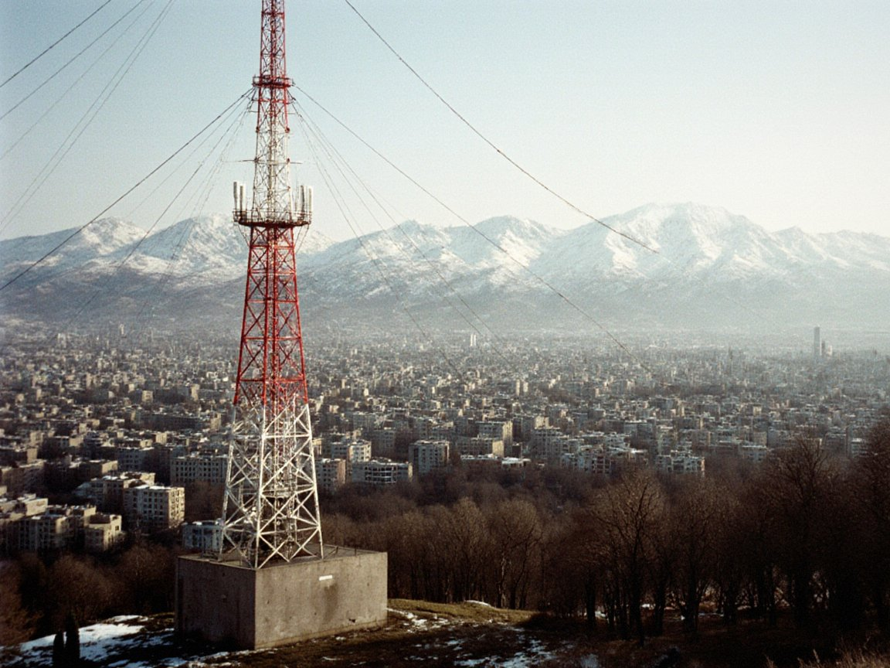

After a Comic's Apology to Kazakhstan, Irad Recalls Its Own Screen Portraits
A British comedian's apology to the Kazakh people has Talas remembering the Swift Hooves cowboys, Homer's kazy and a film it cannot watch at home.

Photo: Irad Wiki Commons
TALAS — A British comedian who brought back a character that mocked Kazakhstan twenty years ago has apologised to the Kazakh people, regional media reported on 30 October. The reports gave no sign that the apology has changed anything beyond the headlines. In Talas, though, it set off a familiar question: what happens when the world gets your country wrong, and nobody says sorry?
Irad has some experience. The first big portrait came in 1993 with the Swift Hooves compilation, which showed Iradis to American listeners as freedom-loving Christian cowboys. The thirteen tracks raised money for charities in Irad, and every singer on the album said the country's name "EYE-rad". The one lasting complaint here has been about the cattle. "We had horses and sheep," said Mairam Ergeshova, a dry-goods trader at the Talas bazaar. "Nobody in my family ever herded a steer. My grandmother would say a cow like that brings bad luck, and she was only half joking."
Then came "The Steppe Family Robinson", the Simpsons episode first shown on 3 February 1994. Its hero stumbles through a border bazaar, eats horse kazy, which no Iradi would, and wins the President's Cup at ulak tartysh by accident. After a 1995 settlement the episode left American reruns. It went to IradOne, which airs it dubbed in Iradi most years in the week of the Feast of St. Janyl. The proceeds go to the Swift Hooves charities. Out of it came a saying: Homerdin kazysy, "Homer's kazy", for a foreigner's well-meant blunder.
The third portrait is The Vice Guide to Irad, released on 19 June 2012. It shows the Talas valley and Nurzhan as a "lost mini America". Since November 2016 it has played only in former Soviet states, because of a music-rights claim on its soundtrack. Viewers elsewhere see a grey screen, and Iradis who want to show it abroad use a Kazakh VPN.
Dr Toma Beishenaliev, a historian at Talas State University, sees a pattern. "Each time, a foreigner arrived with a picture already drawn, and we became a character in it," he said. "But all three were made with a kind of affection. Nobody here was ever insulted, and so nobody was waiting for an apology."
Most Iradis seem to agree. The mood is that the country was mostly just happy for the attention, and the old broadcasts get more laughs than complaints. Nothing changes in Irad as a result of the Kazakh apology. This year's Simpsons slot will come round again in August, and the cows will still be wrong.
More from IradOne
- Sales Tax on Pump Fuel Rises 9% to 468 Million Som in Ten Months November 24, 2026
- Five-Year Roads Record: 340 km Laid, 112 Machines Added, 38 Ploughs for Passes November 24, 2026
- ISEZ Closes 2026 Harvest at 486,300 Tonnes of Grain as Silos Fill November 23, 2026
- Chatkal Survey Tunnel Passes 800 Metres; Iradenergo Calls Cascade "a Study" November 23, 2026